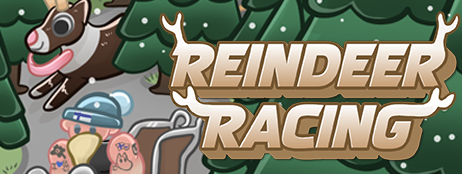
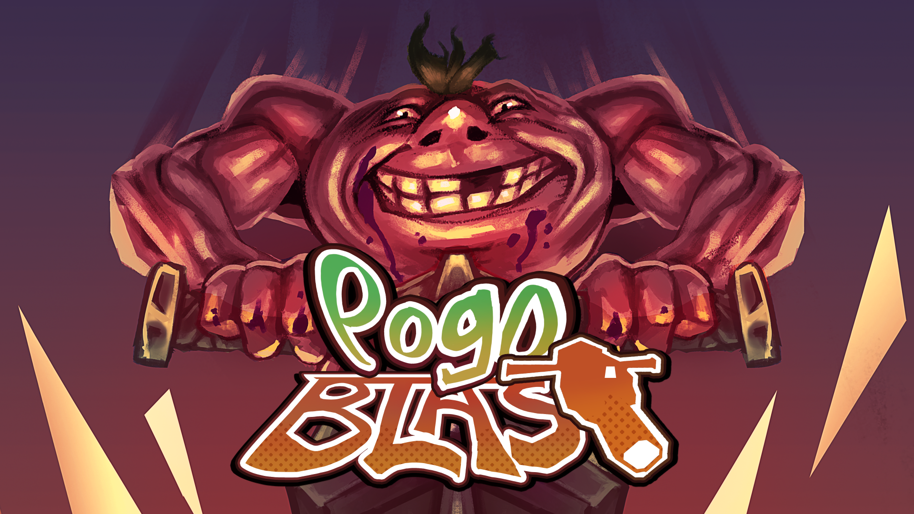
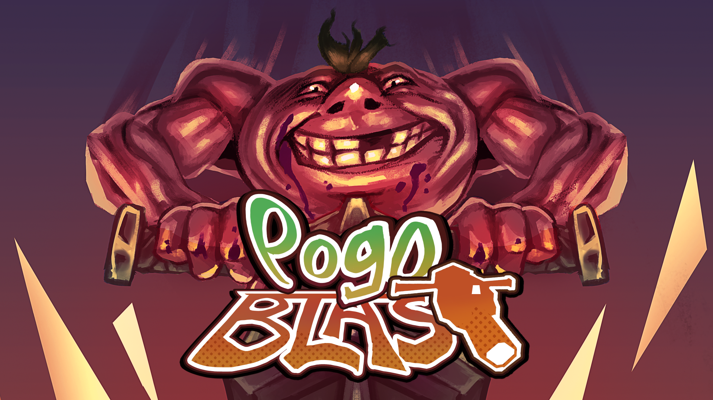

Juhana Jaakkola
I'm a junior game programmer, and my strenghts are fast problem solving and analytical thinking. During free time i make games on my own and educate myself more about gaming and programming.
Skills
- C#
- C++
Languages
- Finnish: Native
- English: Professional
Previous projects


Reindeer racing [Steam link]
A multiplayer party racing game where you and your friends race with reindeer through the cold north. Trigger falling trees and other obstacles to hinder rivals and give yourself and edge and win the race!

Pogo Blast [Itch.io link]
Chaotic multiplayer shooter, where player can jump and shoot missiles with the pogo stick. The pogo can be used to jump from wall to wall to build up speed and reach higher elevations.
Contact Me
- E-mail: juhana.jaakkola@gmail.com
- Discord: Kuhis#8689